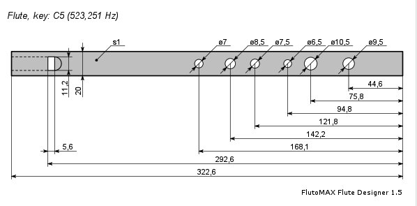

В интернтете есть отличная статья об изготовлении семидырочной свирели.
Подробно и с картинками.
Однако, нам потребуется внести маленькие изменения. Во первых сделаем
свирель такой, чтобы она была точно настроена в тональность до-мажор, как
это требуется по правилам. Для этого нужно, чтобы длина ее от заглушки
свисткового устройства и до переднего среза была 29.5 см. Этот размер всегда
постоянен и обусловлен скоростью звука. Я рекомендую сделать свирель длиной
30 и более см. Потом, еще до сверления отверстий настроить ее, то есть понемногу
спиливать кончик до тех пор, пока на слух звучание не будет соответствовать
"До" первой октавы. При этом длина свирели должна стать 29.5 см.
И второе, нам нужно 6 отверстий, а не семь: Ре, Ми, Фа, Соль, Ля, Си.
Скажу честно, я пробовал делать свирель один раз, но правильно расположить
отверстия у меня не вышло. Но, думается, со второй-третьей попытки все
получится.
Кстати, формула расчета отверстий есть здесь: http://fleitas.narod.ru/ Просто я о ней не
знал, когда делал. Слово автору:
Чтобы сделать мажорную флейту, следует придерживаться формулы
17-10-5-10-8-7. Эти цифры - расстояние между центрами отверстий в процентах
от длины флейты при условии, что их шесть.
Подробности и конструктивные особенности читайте на указанном сайте.
Но и это еще не все. Можно воспользоваться программой расчета флейт, вот
этой http://vk.com/flutomax
И получить готовый чертеж:

Важно!
В последнее время я вижу в сети такое понятие как "минорная свирель", то
есть настроенная в минорный звукоряд. Так вот. Минорные свирели следует
считать богопротивными, аморальными и более опасными чем вирус Эбола.
Дело в том, что мажорный строй - стандартный. Под него разработана
полная аппликатура, имеется цифровой стандарт записи мелодий. А как играть
на минорной - никому не ведомо. Большая ошибка думать, что на мажорной
свирели играют в мажоре, а на минорной - в миноре. Нет. На мажорной свирели
играют в любой тональности, а на минорной - не играют. По крайней мере, мне
об этом неизвестно. И уж конечно, весь мой курс к минорной свирели не
подойдет.
Назад|На главную